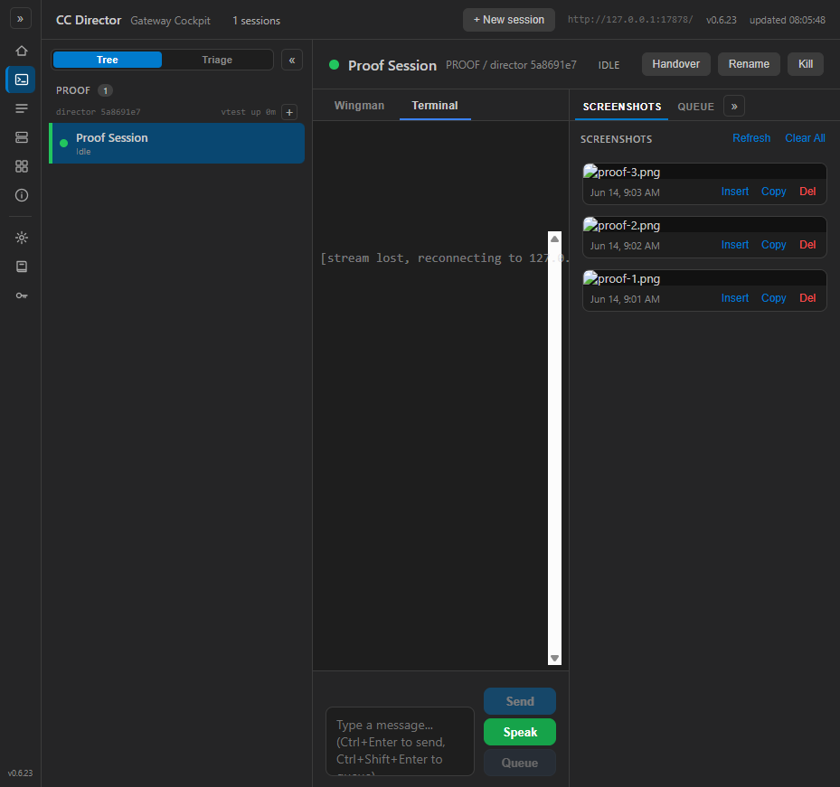
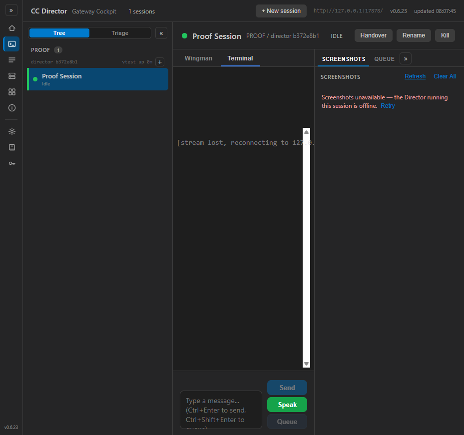

issue-412-shots-503 · I believe this is finishedTwo coordinated changes — a root-cause proxy fix and a graceful error UX:
shots (list) and shot (bytes) legs now use fastPath: true, the
same resilient resolution the generic /sessions/{sid}/{**rest} leg uses. Previously these two legs ran a
fresh fleet fan-out (LocateOwningDirectorAsync) on every call, probing every Director with a 2s timeout;
whenever the owner's GET /sessions/{sid} ownership probe was momentarily slow/contended that resolve
returned null and the cached-owner branch answered a spurious 503 — even though the Director was perfectly
reachable for the screenshot forward itself. The fast path forwards straight to the cached owner and only re-resolves
live if the direct forward fails before any byte flows (self-healing), exactly like the terminal/queue/director legs.GetScreenshotsAsync now inspects the HTTP status and, on a 503, throws a typed
ScreenshotsDirectorOfflineException instead of letting GetFromJsonAsync surface a raw
HttpRequestException. The Screenshots panel renders a human-readable message
— “Screenshots unavailable — the Director running this session is offline.” — with a
Retry action, and a generic load failure shows a plain message + Retry too. The raw
“Response status code does not indicate success: 503” string is never shown.| AC | Result | Proof |
|---|---|---|
| AC1 diagnosis pinned | PASS | The leg=shots Gateway log line names the 503 cause: reason (c) forwarder error
(503 (forwarder error Request)) — the owning Director resolved but the forward itself failed
transiently. See ac1-gateway-shots-leg.log (captured from the user's REAL running Gateway and from this proof run). |
| AC2 loads when reachable | PASS | 02-session-selected.png — tab populated, 3 thumbnails, no 503, no error banner, while the same session is reachable (terminal leg streaming). |
| AC3 count correct | PASS | Panel shows exactly 3 cards = the owning Director's folder (total:3 in GET /screenshots). 02-session-selected.png. |
| AC4 graceful offline message | PASS | 05-offline-message.png — with the session still selected and reachable for other legs, the screenshots leg 503s and the panel shows “Screenshots unavailable — the Director running this session is offline. Retry”, NOT the raw 503 string. |
| AC5 Retry recovers | PASS | Before: 05-offline-message.png; after clicking Retry with the leg restored: 06-after-retry.png — list reloaded, no page reload, no reselection. |
| AC6 no regression (View/Copy) | PASS | Loaded cards keep Insert / Copy / Del and clickable thumbnails (the shot bytes leg, also fastPath'd, served the <img>). 06-after-retry.png. |
From the user's actual running Gateway (OLD plain-resolve path) — the owner resolved, the forward failed:
[SessionWsProxy] leg=shots sid=... resolved director=c99a103c... -> https://soren-north...:7883/screenshots [SessionWsProxy] leg=shots sid=... director=c99a103c... -> 503 (forwarder error Request)
From this proof run on the PATCHED Gateway — fast path forwards direct, self-heals to 503 when offline, recovers on Retry:
[SessionWsProxy] close leg=shots sid=proof-session-412 (fast-path owner 5a8691e7-...) <- reachable (AC2) [SessionWsProxy] leg=shots sid=proof-session-412 fast-path owner 5a8691e7-... failed (Request); re-resolving live [SessionWsProxy] leg=shots sid=proof-session-412 -> 503 (known owner 5a8691e7-... offline/unreachable) <- AC4 [SessionWsProxy] close leg=shots sid=proof-session-412 (fast-path owner b372e8b1-...) <- recovered (AC5)


New Gateway regression tests in src/CcDirector.Gateway.Tests/ScreenshotListProxyRoundTripTests.cs:
the screenshot LIST leg round-trips through the Gateway with ?count= carried through, and an offline owner returns 503.
Full Gateway screenshot+proxy suite: 44 passed, 0 failed. Solution builds clean (dotnet build cc-director.sln — 0 errors).
No architecture or security drift. The change tightens an existing proxy leg's resolution strategy (no new container, no new endpoint, no auth/trust change) and improves a Cockpit error message. No docs/cencon/ update required.
I believe this is finished.